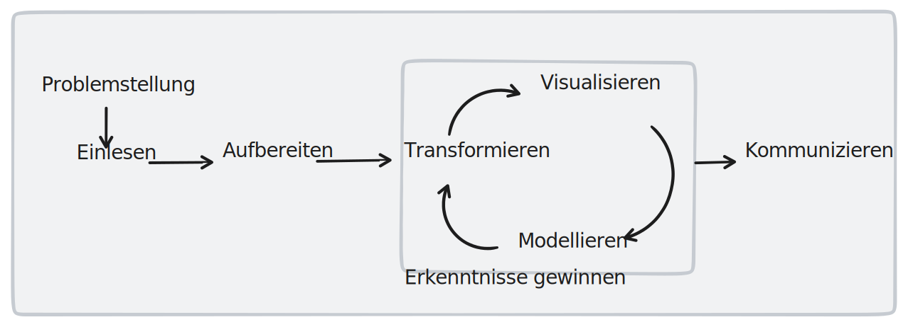

Business Analytics
Was ist Business Analytics?
Bevor wir uns mit Business Analytics inhaltlich weitergehend beschäftigen, müssen wir zunächst definieren, was der Begriff konkret meint. Im Kontext dieser Veranstaltung definieren wir Business Analytics als
“Ein Prozess zur Analyse von Daten mit dem Ziel unternehmerische Entscheidungen zu unterstützen und zu verbessern.”
Der Begriff Business Analytics wird in der Literatur unterschiedlich definiert.1 Für manche Autoren umfasst er alle Formen der Analyse von Unternehmensdaten, während andere eine engere Definition bevorzugen, die sich auf die Verwendung von maschinellen Lernverfahren und anderen fortgeschrittenen Analysemethoden konzentriert. Trotz dieser Unterschiede in der Definition haben alle Ansätze zu Business Analytics eines gemeinsam: Sie zielen darauf ab, durch die Analyse von Daten unternehmerische Entscheidungen zu unterstützen und zu verbessern. Business Analytics ist daher als wichtige Disziplin zu betrachten, die Unternehmen dabei hilft, ihre Leistung zu steigern und ihre Entscheidungen datengestützt zu treffen.
1 siehe z.B. Seiter (2019)
Der Fokus von Business Analytics auf unternehmerische Entscheidungen macht es zu einem wichtigen Thema für kaufmännische Funktionen innerhalb von Unternehmen. Denn gerade in diesen Bereichen werden häufig Entscheidungen getroffen, die den Erfolg und die Leistung des Unternehmens beeinflussen. Business Analytics kann dabei helfen, wichtige Daten und Insights zu sammeln und zu analysieren, um die Entscheidungsfindung zu unterstützen und die Effektivität von Strategien und Maßnahmen zu verbessern. Daher ist es wichtig, dass Führungskräfte und Mitarbeiter in kaufmännischen Funktionen sich mit den Konzepten und Methoden von Business Analytics auseinandersetzen und lernen, wie sie diese in ihrer täglichen Arbeit anwenden können.
In der untenstehenden Tabelle 1.1 sind ein paar beispielhafte Anwendungsfälle dargestellt, die verdeutlichen, wie breit die Anwendung von Business Analytics ist:
| Funktion | Anwendungsfall | Beispiel |
|---|---|---|
| Marketing | Wirksamkeit von Marketingkampagnen analysieren und optimieren | ein Unternehmen könnte die Conversion-Rate von Landing Pages oder die Klickrate von Email-Kampagnen analysieren, um zu verstehen, welche Maßnahmen am effektivsten sind |
| Finanzen | finanzielle Leistung analysieren und optimieren | ein Unternehmen könnte die Rentabilität von einzelnen Produkten oder Geschäftsbereichen analysieren, um Ressourcen gezielt einzusetzen und die Profitabilität zu erhöhen |
| Personal | Mitarbeiterleistung analysieren und verbessern | ein Unternehmen könnte Daten zu Mitarbeiterfeedback, Absentismus und Fluktuation analysieren, um die Mitarbeiterzufriedenheit und -fluktuation zu erhöhen |
| Logistik | Leistung der Lieferkette analysieren und optimieren | ein Unternehmen könnte Daten zu Lieferzeiten, Bestandsniveaus und Transportkosten analysieren, um die Effizienz der Lieferkette zu erhöhen und Lieferprobleme zu minimieren |
Es wird außerdem deutlich, dass sich abhängig vom jeweiligen Anwendungsfall auch die verwendeten Daten und Analysetechniken unterscheiden können.
Vorteile durch Business Analytics?
Ausgehend von der o.g. Definition kann die Datenanalyse auf sowohl strategischer, als auch auf operativer Ebene vorteilhaft sein.
Auf operativer Ebene kann Der Einsatz von Business Analytics vorteilhaft sein, da er es Unternehmen ermöglicht, Daten zu sammeln und zu analysieren, um z.B. ihre Prozesse zu optimieren und/oder Kosten zu senken. Auf Basis dieser Verbesserungen kann man sich vom Wettbewerb unterscheiden und absetzen. Der Einsatz von Business Analytics kann auf strategischer Ebene vorteilhaft sein, da er es Unternehmen ermöglicht, Trends zu erkennen und auf sie zu reagieren, um sich einen Wettbewerbsvorteil zu verschaffen. Die Analyse von Daten kann Unternehmen dabei helfen, tiefgreifende Einblicke in die Märkte und Kundenbedürfnisse zu gewinnen und diese Informationen zu nutzen, um ihre Strategien anzupassen und sich von ihren Wettbewerbern abzuheben. Der Einsatz von Business Analytics kann somit dazu beitragen, dass Unternehmen ihre Wettbewerbsposition verbessern und ihre Leistung steigern.
So ist es nicht verwunderlich, dass es auch Belege dafür gibt, dass Unternehmen durch den Einsatz von Business Analytics erfolgreicher sind. So zeigen z.B. Shanks u. a. (2010) theoretisch auf, dass Business Analytics einen Einfluss auf die Strategie und die Performance von Unternehmen hat. Die vergleichende empirische Analyse von Popovič u. a. (2018) betont hingegen, dass Unternehmen, die hohen “Business Analytics”-Fähigkeiten haben, in der Lage sind bessere Entscheidungen zu treffen und so einen höheren Unternehmenswert generieren. In einer weiteren empirischen Analyse zeigen Almazmomi, Ilmudeen, und Qaffas (2021), dass der erhöhte Einsatz von Business Analytics einen Wettbewerbsvorteil darstellt.
Drei Arten der Datenanalyse
Das Feld von Business Analytics ist sehr weit. Es macht deshalb Sinn, das breite Themengebiet zu unterteilen. Wir werden im Rahmen dieses Kurses Business Analytics in die folgenden drei Analyse-Kategorien unterteilen:
deskriptive Analyse
diagnostische Analyse
prädiktive Analyse
Ich gebe zu: die Unterteilung ist ein Stück weit beliebig und auch nicht MECE (mutual exclusive, collectively exhaustive). Ich halte Sie aus didaktischen Gründen dennoch geeignet sich dem breiten Themengebiet Business Analytics Schritt für Schritt zu nähern.2
2 Für eine ausführlichere Diskussion der unterschiedlichen Arten von Business Analytics siehe z.B. Gluchowski (2016).
Die deskriptive Analytik ist die Art von Business Analytics, die sich auf die Vergangenheit konzentriert. Sie zielt darauf ab, ein besseres Verständnis dafür zu entwickeln, was in der Vergangenheit passiert ist, indem sie Daten sammelt und analysiert. Zum Beispiel könnte ein Unternehmen die Verkaufszahlen der vergangenen Jahre analysieren, um herauszufinden, welche Produkte am beliebtesten waren und wie sich die Verkäufe im Laufe der Zeit entwickelt haben. Die deskriptive Analytik kann dazu beitragen, Muster und Trends zu erkennen und die Leistung des Unternehmens besser zu verstehen.
Die diagnostische Analytik geht einen Schritt weiter und versucht, die Ursachen für bestimmte Ereignisse oder Muster zu untersuchen. Sie nutzt Vergangenheitsdaten und bewährte statistische Verfahren (z.B. lineare Regression), um Muster und Trends zu identifizieren und die Gründe für bestimmte Ereignisse oder Muster zu erklären. Zum Beispiel könnte ein Unternehmen die diagnostische Analytik nutzen, um herauszufinden, warum bestimmte Kunden häufiger Produkte zurückgeben oder warum die Umsätze in bestimmten Filialen niedriger sind als in anderen.
Die prädiktive Analytik geht noch einen Schritt weiter und versucht, die Zukunft vorherzusagen. Sie nutzt Vergangenheitsdaten, bewährte statistische Verfahren und teilweise auch Verfahren des maschinellen Lernens, um Muster und Trends zu identifizieren und Vorhersagen für zukünftige Ereignisse zu treffen. Zum Beispiel könnte ein Unternehmen die prädiktive Analytik nutzen, um zu prognostizieren, wie sich die Nachfrage nach einem bestimmten Produkt in der Zukunft entwickeln wird, oder um Kundenverhalten vorherzusagen, um gezielte Marketingkampagnen zu erstellen.
Jede dieser Arten von Business Analytics kann Unternehmen dabei helfen, bessere Entscheidungen zu treffen. Oft werden die Analyseformen auch kombiniert bzw. es wird im Rahmen einer Analyse gar nicht unterschieden, um welche Kategorie es sich handelt. Im Rahmen des Moduls werden wir uns allen drei Arten widmen und uns Schritt für Schritt auch (vermeintlich) komplexen Analysen widmen.
Der Analyseprozess
Eingangs des Kapitels haben wir Business Analytics definiert und dabei festgehalten, dass es sich um einen Prozess handelt. Lassen Sie uns an dieser Stelle den Prozess der Analyse kurz beschreiben. Denn auch wenn dieser sich im Detail bei jeder Analyse natürlich unterscheidet, sind die grundsätzlichen Analyseschritte ganz unabhängig von der Art der Analyse und dem Analysezweck immer identisch. Die wesentlichen Prozessschritte lauten:
Der Datenanalyse-Prozess umfasst eine Reihe von Schritten, die dazu dienen, ein bestimmtes Analyseproblem zu lösen. Die Schritte sind in der Regel untereinander abhängig und müssen in der richtigen Reihenfolge ausgeführt werden, um zu sinnvollen Ergebnissen zu gelangen.
Formulierung der Problemstellung: Der erste Schritt bei der Datenanalyse ist die Definition des Analyseproblems. Dabei geht es darum, die Frage oder das Problem zu formulieren, das mit der Analyse beantwortet oder gelöst werden soll. Zudem muss festgelegt werden, welche Daten dazu benötigt werden und wo diese gefunden werden können. Beispielsweise könnte das Analyseproblem lauten: “Welche Faktoren beeinflussen die Kundenzufriedenheit in unserem Unternehmen?” Um dieses Problem zu lösen, müssen Daten zu Kundenzufriedenheit und möglichen Einflussfaktoren gesammelt werden.
Finden und Einlesen der Daten: Nachdem das Analyseproblem definiert wurde, müssen die benötigten Daten gefunden und eingelesen werden. Diese können entweder aus internen Quellen, wie beispielsweise einer Unternehmensdatenbank, oder aus externen Quellen, wie öffentlich zugänglichen Datensätzen oder Daten, die von Kunden oder anderen Stakeholdern bereitgestellt werden, stammen. Es ist wichtig, sicherzustellen, dass die Daten korrekt und vollständig sind und dass alle relevanten Informationen enthalten sind.
Aufbereiten der Daten: Sobald die Daten eingelesen wurden, müssen sie aufbereitet werden. Dieser Schritt beinhaltet die Säuberung und Strukturierung der Daten, damit sie für die weitere Analyse nutzen können. Dazu gehört beispielsweise das Entfernen von fehlerhaften oder inkonsistenten Daten, das Umcodieren (z.B. ja/nein zu 1/0), die Umbennung von Spalten. Kurzum: Es geht darum, die Daten so aufzubereiten, dass sie für die Analyse nutzbar sind.
Transformieren der Daten: Mit diesem Schritt beginnt der eigentliche Erkenntnisprozess, d.h. wir beginnen Daten zu analysierem, um daraus Erkenntnisse zu ziehen und Dinge zu lernen. Dafür werden z.B. aus bestehenden Daten neue Daten berechnet oder wir aggregiern, gruppieren und filtern Daten, um Erkenntnisse zu generieren. Wir transformieren den bestehenden Datensatz mit dem Ziel neue Informationen zu generieren, die uns bei der Beantwortung unserer Problemstellung helfen.
Visualisieren der Daten: die Visualisierung von Daten geht oft mit der der Transformation (und auch mit der Modellierung) einher. Die Visualisierung hilft uns, Muster und Zusammenhänge zu erkennen und Ergebnisse zu veranschaulichen. Es gibt verschiedene Möglichkeiten, Daten zu visualisieren, wie beispielsweise Tabellen, Diagramme oder Karten. Das Ziel ist es, die Daten so darzustellen, dass sie leicht verständlich und interpretierbar sind.
Modellieren der Daten: In diesem Schritt werden Mathematische Modelle erstellt, um die Daten zu analysieren und Vorhersagen zu treffen. Dazu können beispielsweise Regressionsanalysen oder Klassifikationsmodelle verwendet werden. Das Ziel ist es, Zusammenhänge und Muster in den Daten zu erkennen und Vorhersagen für die Zukunft zu treffen.
Kommunizieren der Daten: Zum Schluss müssen die Ergebnisse der Datenanalyse kommuniziert werden. Dies kann in Form von Berichten, Präsentationen oder anderen Dokumenten geschehen, die die Ergebnisse verständlich und nachvollziehbar darstellen. Das Ziel ist es, die Ergebnisse der Analyse der relevanten Stakeholder zugänglich zu machen und sie in die Entscheidungsfindung einzubeziehen.
Die folgende Darstellung soll den Analyseprozess in Anlehnung an Wickham und Grolemund (2016) abbilden. Die Schritte 4, 5 und 6 bezeichnen wir auch als explorative Analyse. Damit soll betont werden, dass es meist nicht um einen rein sequenziellen Prozess handelt, sondern die Schritte oft iterativ durchlaufen werden.

Die Abbildung verdeutlicht, dass es sich beim Analyse-Prozess um einen iterativen und teilweise explorativen Prozess handelt. Die Schritte “Transformation”, “Visualisierung” und “Modellierung” sind häufig iterative Prozessschritte, bei denen man auch explorativ vorgeht. Das bedeutet auch, man sich bewusst die Freiheit nimmt, unterschiedliche Verfahren auszuprobieren, um neue Erkenntnisse zu gewinnen oder dass man offen für neue Ideen und Ansätze bleibt und sich nicht zu früh auf eine bestimmte Vorgehensweise festlegt. Durch die iterative Durchführung dieser Schritte und das explorative Vorgehen kann man neue Erkenntnisse gewinnen und die Analyse vertiefen.
Zudem zeigt sich, dass die Schritte “Transformation”, “Visualisierung” und “Modellierung” im Datenanalyse-Prozess nicht unabhängig voneinander betrachtet werden können, sondern dass sie sich gegenseitig beeinflussen und bedingen. Beispielsweise könnte es bei der Transformation der Daten notwendig sein, mehrere Veränderungen an den Daten vorzunehmen, um sie für die geplante Analyse geeignet zu machen. Durch die Visualisierung der Daten kann es jedoch möglich sein, neue Muster oder Zusammenhänge zu erkennen, die dazu führen, dass die Daten anders transformiert werden müssen. Ähnlich verhält es sich bei der Modellierung der Daten. Hier können verschiedene Modelle verglichen und iterativ verbessert werden, um die besten Vorhersagen zu erhalten. Durch die Visualisierung der Ergebnisse kann es jedoch möglich sein, dass neue Erkenntnisse gewonnen werden, die dazu führen, dass das Modell anders aufgebaut werden muss. Es ist daher wichtig, dass diese Schritte nicht unabhängig voneinander betrachtet werden, sondern dass man sich bewusst die Freiheit nimmt, explorativ vorzugehen und die Schritte iterativ durchzuführen, um zu sinnvollen Ergebnissen zu gelangen.